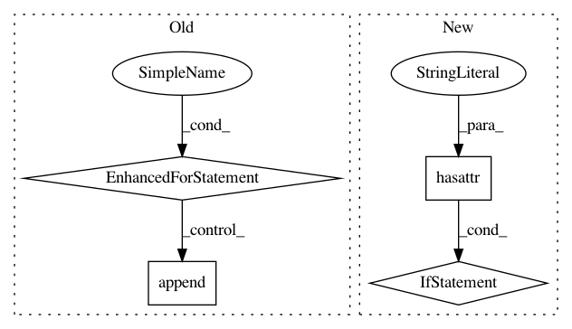

f5ff0f5fb3933bb4e704ce7947e2bd5a99ef8358,tests/links_tests/model_tests/yolo_tests/test_yolo_base.py,DummyYOLO,_decode,#DummyYOLO#Any#Any#,34
Before Change
bboxes = []
labels = []
scores = []
for _ in range(self._value.shape[0]):
n_bbox = np.random.randint(self._n_anchor - 1)
bboxes.append(generate_random_bbox(n_bbox, self._insize, 8, 48))
labels.append(np.random.randint(self._n_fg_class - 1, size=n_bbox)
.astype(np.int32))
scores.append(np.random.uniform(size=n_bbox).astype(np.float32))
return bboxes, labels, scores
class TestYOLOBase(unittest.TestCase):
After Change
loc = to_cpu(loc)
conf = to_cpu(conf)
if not hasattr(self, "_count"):
self._count = 0
np.testing.assert_equal(loc, value[self._count, :, :4])
np.testing.assert_equal(conf, value[self._count, :, 4:])
self._count += 1
In pattern: SUPERPATTERN
Frequency: 3
Non-data size: 4
Instances
Project Name: chainer/chainercv
Commit Name: f5ff0f5fb3933bb4e704ce7947e2bd5a99ef8358
Time: 2018-05-02
Author: Hakuyume@users.noreply.github.com
File Name: tests/links_tests/model_tests/yolo_tests/test_yolo_base.py
Class Name: DummyYOLO
Method Name: _decode
Project Name: keras-team/keras
Commit Name: 94dbc3042f5a85b399f5ce2859d4e8fbafd235b9
Time: 2017-07-06
Author: me@taehoonlee.com
File Name: tests/keras/backend/backend_test.py
Class Name:
Method Name: check_single_tensor_operation
Project Name: keras-team/keras
Commit Name: 94dbc3042f5a85b399f5ce2859d4e8fbafd235b9
Time: 2017-07-06
Author: me@taehoonlee.com
File Name: tests/keras/backend/backend_test.py
Class Name:
Method Name: check_two_tensor_operation